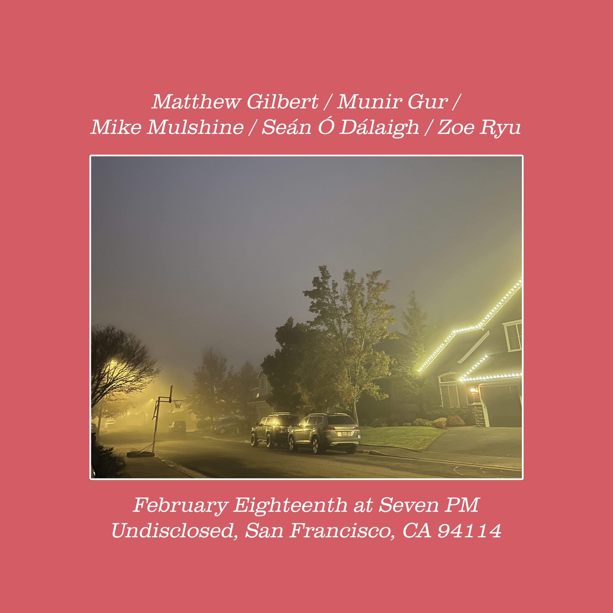

The songwriting outlet for Matthew Gilbert. Accompaniment currently: Mike, Munir, Seán, Zoe. You can download music here or listen on Spotify. All compositions and arrangements are in the public domain.

Words Films Dates Press Contact